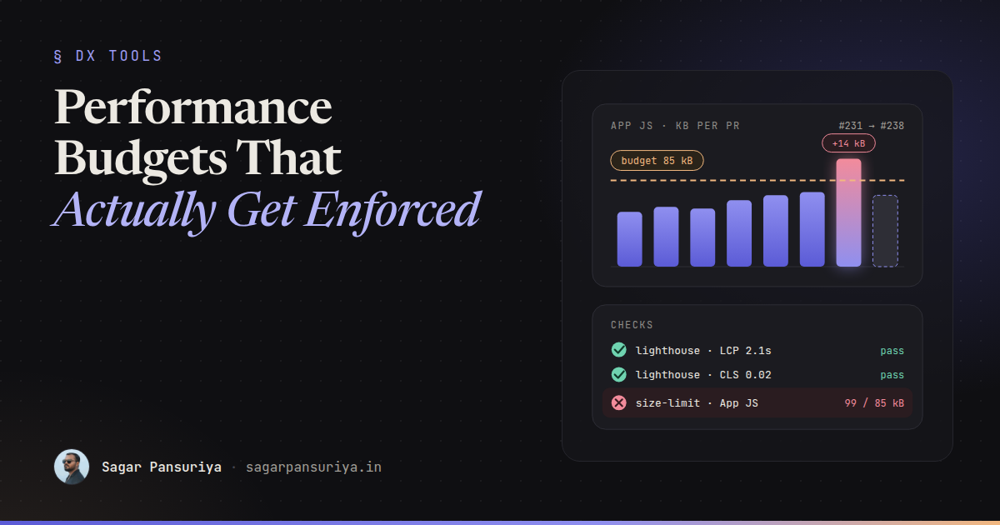
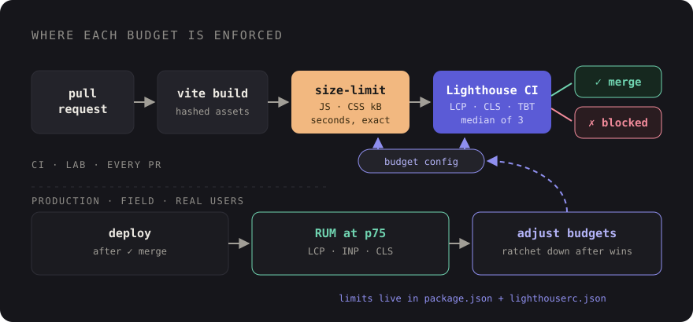

Frontend Performance Budgets That Actually Get Enforced


Most teams I've worked with have had a performance budget at some point. It usually lives in a Notion page or a kickoff slide: "JS under 200 KB, LCP under 2.5 seconds." Everyone agrees. Six months later the homepage ships 600 KB of JavaScript, and nobody can say which pull request did it, because every single one only added "a little bit".
That's the real problem with budgets. The numbers are rarely wrong. They just aren't enforced. A budget that doesn't fail a build is a wish.
This post covers how I'd set one up so it actually holds: which metrics to budget, how to pick numbers from real user data instead of guessing, how to wire Lighthouse CI and size-limit into GitHub Actions, how to see what's inside a Vite bundle, and what the team should do when the check goes red.
Pick metrics you can measure on every pull request
There are two kinds of budget, and you want both:
- Quantity budgets: kilobytes of JavaScript and CSS, number of requests, image weight. They're deterministic. The same commit always produces the same number, so they make excellent CI gates.
- Timing budgets: LCP, CLS, and a proxy for responsiveness. They're what users actually feel, but lab measurements are noisy, so they need more careful thresholds.
One important catch: INP can't be measured in CI. It needs real interactions from real users, and Lighthouse only loads the page. In the lab, Total Blocking Time (TBT) is the usual stand-in. It's not the same metric, but a page with lots of long tasks at load will tend to have worse INP, so budgeting TBT catches the worst regressions. Keep tracking INP itself from field data.
A sensible starting set:
| Metric | Type | Where it's enforced |
|---|---|---|
| JS size (compressed) per entry | Quantity | size-limit, every PR |
| CSS size (compressed) | Quantity | size-limit, every PR |
| Script request count | Quantity | Lighthouse CI |
| LCP (lab) | Timing | Lighthouse CI |
| CLS (lab) | Timing | Lighthouse CI |
| TBT (lab proxy for INP) | Timing | Lighthouse CI |
| LCP, INP, CLS at p75 | Field | RUM dashboard, reviewed weekly |
Set numbers from real users, not round numbers
Budgets picked out of thin air fail in one of two ways. Too strict, and the first PR breaks them, so people learn to ignore the check. Too loose, and they never trip, so they catch nothing.
Start from what you have:
- Get field data. PageSpeed Insights shows CrUX data for sites with enough
traffic. For everything else, the
web-vitalslibrary sending p75 LCP, INP and CLS to your own endpoint is enough. - Compare against the thresholds. Google's "good" lines are LCP at 2.5 s or less, INP at 200 ms or less, and CLS at 0.1 or less, all at the 75th percentile.
- Record today's lab and bundle numbers. Run a production build and a few Lighthouse runs, and write down the current sizes and timings.
- Set the budget just above today. If you're already in "good" territory, budget roughly 5 to 10 percent above the current number so normal noise passes but real growth fails. If you're not, budget at today's number and ratchet it down as you fix things.
The point of the first budget isn't to be ambitious. It's to stop things getting worse. Improvement comes from ratcheting.

Bundle size checks with size-limit
Bundle size is the cheapest, most reliable gate, so start there. size-limit
measures built files and fails if they're over the limit. Install it with the file plugin:
npm install --save-dev size-limit @size-limit/fileThen point it at your build output. For a Laravel app using Vite, hashed files land in
public/build/assets, and globs handle the hashes:
// package.json
{
"scripts": {
"build": "vite build",
"size": "size-limit"
},
"size-limit": [
{ "name": "App JS", "path": "public/build/assets/app-*.js", "limit": "85 kB" },
{ "name": "App CSS", "path": "public/build/assets/app-*.css", "limit": "18 kB" },
{ "name": "Admin JS", "path": "public/build/assets/admin-*.js", "limit": "160 kB" }
]
}Budget per entry point, not the whole folder. The marketing pages and the admin panel have very different users and very different acceptable weights. size-limit reports compressed sizes, which is what actually goes over the wire, so make sure you compare it with compressed numbers and not the raw figures from your editor.
There are community GitHub Actions that post size-limit results as a PR comment showing the diff against the base branch. That comment alone changes behaviour: people see "+14 kB" next to their name before a reviewer has to say anything.
Lighthouse CI with assertions
Lighthouse CI runs Lighthouse against URLs you choose, several times, and asserts on the
results. Configuration lives in lighthouserc.json at the repo root:
{
"ci": {
"collect": {
"startServerCommand": "php artisan serve --port=8000",
"startServerReadyPattern": "Server running",
"url": [
"http://127.0.0.1:8000/",
"http://127.0.0.1:8000/pricing",
"http://127.0.0.1:8000/blog/example-post"
],
"numberOfRuns": 3
},
"assert": {
"assertions": {
"largest-contentful-paint": ["error", { "maxNumericValue": 2500, "aggregationMethod": "median-run" }],
"cumulative-layout-shift": ["error", { "maxNumericValue": 0.1, "aggregationMethod": "median-run" }],
"total-blocking-time": ["warn", { "maxNumericValue": 250, "aggregationMethod": "median-run" }],
"resource-summary:script:size": ["error", { "maxNumericValue": 180000 }],
"resource-summary:script:count": ["warn", { "maxNumericValue": 12 }],
"resource-summary:third-party:count": ["warn", { "maxNumericValue": 5 }]
}
},
"upload": {
"target": "temporary-public-storage"
}
}
}A few choices worth explaining:
- The numbers are placeholders. Lighthouse's default mobile run simulates a slow device and network, so lab LCP is usually worse than your field p75. Replace these with your own baseline from the previous section.
- Three runs, median. One Lighthouse run on a shared CI runner is noisy. The median of three smooths out most of it without making the job slow.
errorvswarn. Hard-fail on the stable metrics (LCP, CLS, script size). Warn on the noisier ones like TBT until you trust the numbers, then promote them.- Sizes are in bytes.
resource-summaryassertions use transfer size in bytes, so 180000 is roughly 176 KB. - Pick representative URLs. The homepage, one template-heavy page and one content page usually cover most regressions. Don't test twenty URLs on every PR.
The temporary-public-storage target uploads reports to a public URL that's kept
for a limited time, which is handy for clicking through from a failed check. If your pages
contain anything private, run your own Lighthouse CI server instead or skip the upload.
The GitHub Actions workflow
# .github/workflows/performance.yml
name: Performance budget
on: pull_request
jobs:
budget:
runs-on: ubuntu-latest
steps:
- uses: actions/checkout@v4
- uses: shivammathur/setup-php@v2
with:
php-version: '8.3'
- uses: actions/setup-node@v4
with:
node-version: 22
cache: npm
- run: composer install --no-interaction --prefer-dist
- run: cp .env.example .env && php artisan key:generate
- run: npm ci
- run: npm run build
- name: Bundle size
run: npm run size
- name: Lighthouse CI
run: npx @lhci/cli autorunBundle size runs first because it's fast and deterministic. If it fails, you get the answer in seconds without waiting for Lighthouse. Your app will likely need a database or seeded data for pages to render meaningfully; an SQLite file and a seeder in the workflow is usually the simplest way to get realistic pages in CI.
See what's actually in the bundle
When a size check fails, the next question is always "what got bigger?" Vite's build output
already lists every chunk with its compressed size, which is often enough. For a proper
picture, add rollup-plugin-visualizer behind an environment flag:
// vite.config.js
import { defineConfig } from 'vite';
import laravel from 'laravel-vite-plugin';
import { visualizer } from 'rollup-plugin-visualizer';
export default defineConfig({
plugins: [
laravel({ input: ['resources/css/app.css', 'resources/js/app.js'], refresh: true }),
process.env.ANALYZE && visualizer({
filename: 'storage/bundle-stats.html',
template: 'treemap',
gzipSize: true,
brotliSize: true,
}),
],
});Run ANALYZE=1 npm run build and open the HTML file. The treemap makes the usual
suspects obvious: a date library with every locale, a whole icon set imported for three
icons, a charting library loaded on pages that don't have charts. Most fixes are a named
import or a dynamic import() so the heavy code only loads where it's used.
What the team does when a budget breaks
This is the part that decides whether the budget survives. Tooling is the easy half. Agree on the process up front, before the first red check:
- A red budget blocks the merge, just like a failing test. No "we'll fix it later". Later never comes.
- The author investigates first. Usually the visualizer shows the cause in a minute, and the fix is a lazy import or a lighter dependency.
- Raising a budget is allowed, but explicit. It's a change to
package.jsonorlighthouserc.jsonin the same PR, with a sentence explaining why. A reviewer who owns performance signs it off. Sometimes the feature really is worth 20 KB, and that's a fine decision to make on purpose. - Ratchet down after wins. When someone cuts 30 KB, lower the budget in the same PR so the win is locked in.
- Review field data regularly. Once a month, compare real-user p75 numbers with the lab budgets. If the lab passes but the field is getting worse, your test URLs or throttling don't reflect real users.
The goal isn't a perfect score. It's making every regression a visible, deliberate decision instead of an accident nobody noticed.
A checklist to keep
- Budget both quantities (JS, CSS, request counts) and timings (LCP, CLS, TBT).
- Track INP from real users; use TBT as the lab proxy in CI.
- Set first budgets just above today's numbers, based on field and lab data.
- size-limit per entry point on every PR, with a diff comment if you can.
- Lighthouse CI with three runs, median aggregation, errors on stable metrics.
- Keep
rollup-plugin-visualizerone env flag away. - Red blocks merge; raising a budget needs a reason and a reviewer; wins get ratcheted in.
None of this is complicated, and that's the point. A budget that lives in CI and fails loudly will do more for your site's speed than any number of performance sprints.
Discussion